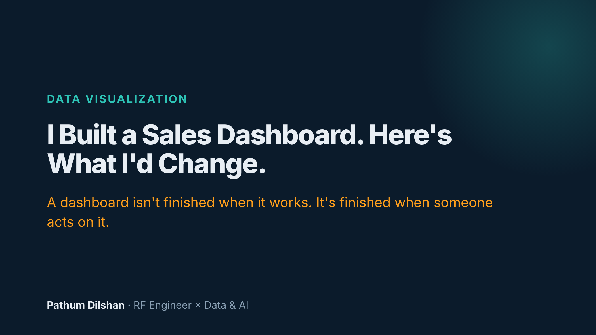
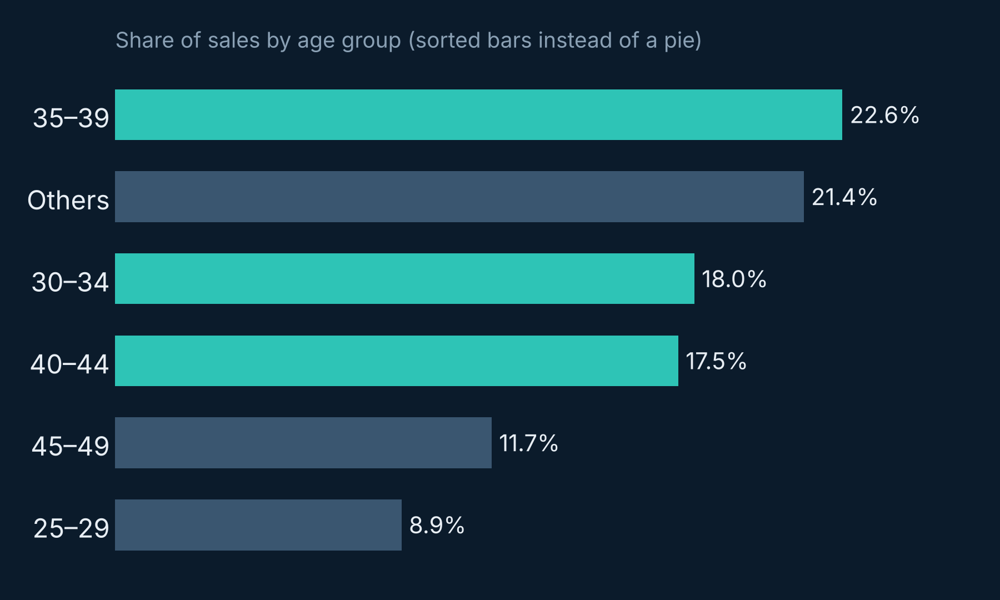

I Built a Sales Dashboard. Here's What I'd Change.
An honest review of my own Looker Studio dashboard, and seven rules for dashboards people actually use

A while ago I built a Looker Studio dashboard on 817,741 supermarket transactions: three headline numbers, a daily sales line, sales by district, by day of week and by age group. It works. People can read it. But looking at it again, there's a lot I'd do differently.
Reviewing your own work in public is uncomfortable, and it's also the fastest way to get better. Here's my honest review.
What worked
- Headline numbers first. Total sales, gross profit and customers sit at the top, so the big picture takes two seconds.
- One question per chart. Each chart answers exactly one thing: when, where, which day, who.
- Sorted bars. District sales are sorted largest to smallest, so the ranking is obvious without reading a single number.
What I'd change
1. Replace the pie chart

The age-group pie has six slices, and people are poor at comparing angles. Is 30–34 (18%) bigger than 40–44 (17.5%)? In a pie you can't tell. In a sorted bar chart it's instant.
2. Show margin, not just sales
The dashboard shows gross profit as one number but everything else as sales. A district with high sales and thin margins looks like a winner when it might not be. Margin by district and by day would be far more useful to a manager.
3. Mark missing data on the chart
In late December the daily line drops to almost zero. That's almost certainly missing data, not a business collapse. But nothing on the chart says so. Anyone reading it could draw the wrong conclusion, so I'd shade or annotate those days.
4. Add comparison
A number on its own means little. "NT$26M on Sundays" is more useful as "Sunday is 2× a weekday." Comparisons with an average, a target or the previous period turn numbers into decisions.
5. Write the headline, not just the title
"Sales by Day of Week" describes the chart. "Weekends bring in 43% of sales" tells you what it means. Insight titles save every reader the work of figuring it out.
Seven rules I'll follow next time
- Start from the decision the dashboard supports, not the data available.
- Headline numbers at the top, detail below.
- One question per chart.
- Bars over pies; sort by value.
- Show comparisons, not just totals.
- Annotate anything unusual, especially gaps.
- Title charts with the insight.
A dashboard isn't finished when it works. It's finished when someone acts on it.
Pathum Dilshan is an RF & Network Planning Engineer at Mobitel, Sri Lanka, and an MSc Data Science & AI student at the University of Moratuwa. He writes about telecom, data and AI. Connect on LinkedIn or visit pmpdilshan.github.io.